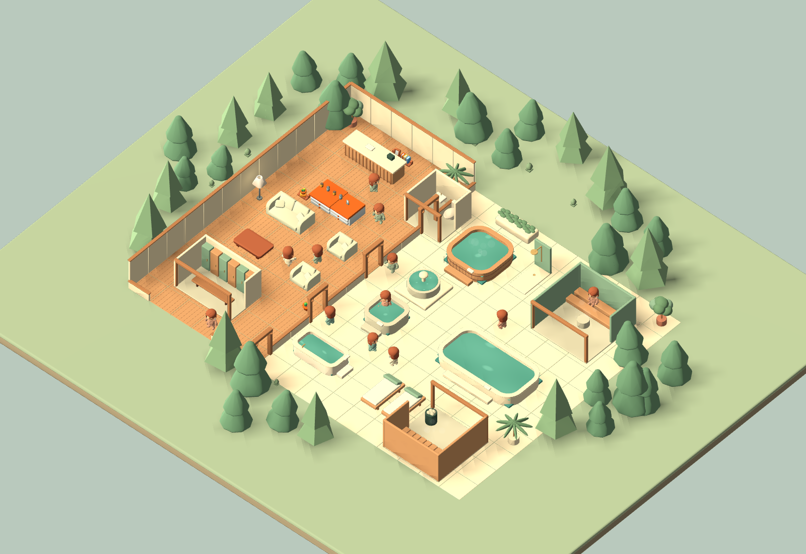

Stillwater
A quiet little spa to make your own. Rebuilt with Godot and a coherent family of stylized game assets.
Play in your browserDownload the local HTML gameTo play offline, extract the ZIP and open Stillwater.html. The engine and assets are embedded; no server or installation is needed. Use a modern browser with WebGL 2 and WebAssembly. The large HTML takes a moment to open.

Download the editable Godot project
Includes the native scene code, imported CC0 asset packs, licenses, and the Blender source for the matching spa kit. Open godot/project.godot with Godot 4.6.3.Art & engine credits · Previous version · Source repository